Solualuminios · Inventario de perfiles. Cotizaciones, órdenes de venta, despachos y solicitudes de material.
Versión 1 · Noviembre de 2026
Para el rol Ventas (vendedores de almacén y de bodega)
Los clientes, precios y personas de los pantallazos son de ejemplo.
1Antes de empezar
1.1 Qué puedes hacer con tu rol
Con el rol Ventas puedes:
consultar el inventario: existencias, paquetes y chips;
hacer cotizaciones de Detal o Ventanería y descargarlas en PDF;
convertirlas en órdenes de venta, reservar el material y pedir el despacho a bodega;
pedir material a una bodega para tu almacén (solicitudes a bodega);
organizar tus tareas.
Solo ves tus propias cotizaciones y órdenes. Los costos de compra no se muestran a Ventas: el precio de venta lo habilita administración.
1.2 Ingresar a la aplicación
Abre la dirección de la aplicación que te dio el administrador (en el computador o en el celular).
Escribe tu correo electrónico y tu contraseña. El ojo de la derecha muestra lo que escribiste.
Presiona Iniciar sesión.
Pantalla de ingreso.
Importante
Si recargas o cierras la página, tendrás que ingresar de nuevo. Es normal y protege tu cuenta. Si olvidaste la contraseña o necesitas acceso, pídeselo al administrador.
1.3 Inicio y menú
Al entrar ves Inicio, con un acceso para cada sección. En el computador, el menú está a la izquierda; abajo aparecen tu nombre, tu rol y el botón para cerrar sesión.
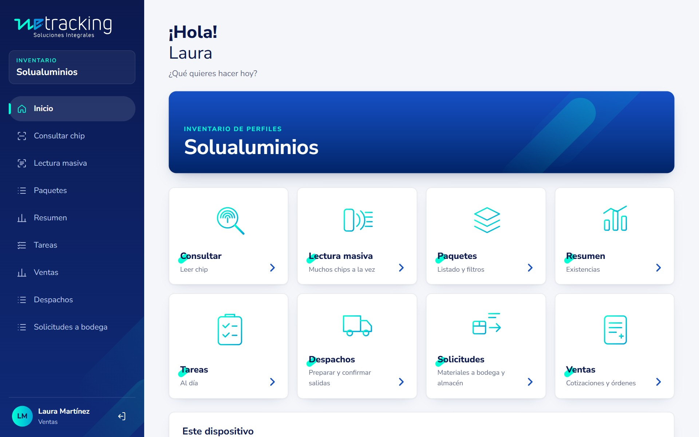
Inicio en el computador.
Sección
Para qué sirve
Consultar chip
Ver un paquete leyendo su chip o escribiendo su código.
Lectura masiva
Leer muchos chips a la vez con el lector.
Paquetes
Lista de paquetes con filtros por producto, ubicación y procedencia.
Resumen
Perfiles disponibles por referencia y color, y dónde están.
Tareas
Tus tareas y las que te asignan.
Ventas
Cotizaciones y órdenes de venta.
Despachos
Entregas autorizadas de tus órdenes.
Solicitudes a bodega
Pedir material a una bodega para un almacén.
1.4 En el celular
La aplicación se adapta al celular. La barra de abajo tiene Inicio, Chip, Paquetes, Resumen y Tareas; Ventas, Despachos y Solicitudes se abren desde los accesos de Inicio. El número sobre Tareas indica cuántas tienes pendientes.
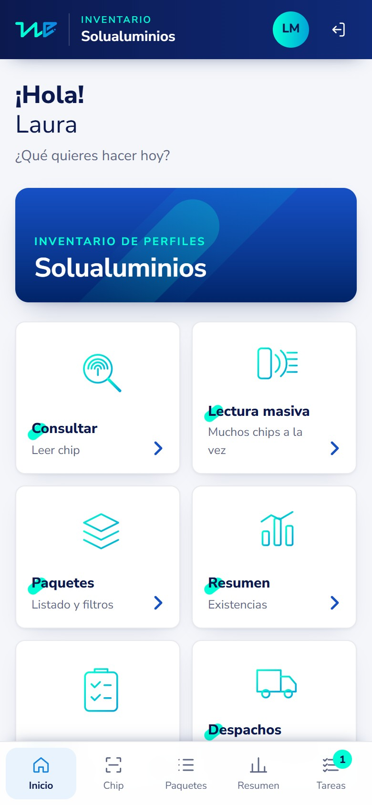
Inicio en el celular.
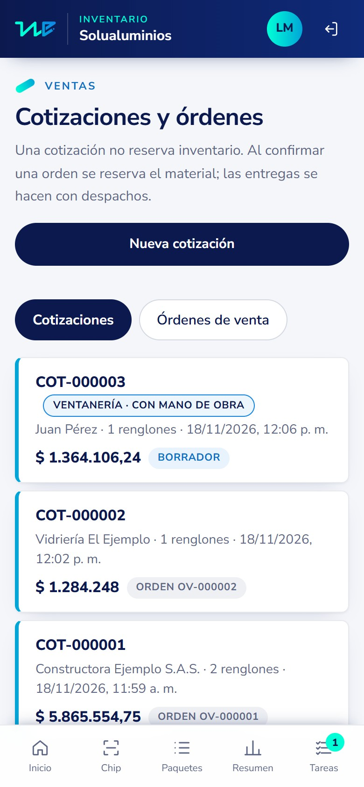
Ventas en el celular.
Instalar la aplicación: en Inicio, el recuadro Este dispositivo ofrece Instalar aplicación. Así se abre como una app, desde un ícono en la pantalla de inicio y sin la barra del navegador. En Android usa Google Chrome.
Pantallazo pendiente (celular real)El botón «Instalar aplicación» en Inicio → Este dispositivo, la confirmación de Chrome y el ícono en la pantalla de inicio del teléfono.
1.5 Notificaciones
La aplicación te avisa en el celular cuando:
un administrador aprueba o rechaza tu descuento o tu precio manual;
bodega confirma la salida de un despacho de tu orden;
facturan una de tus órdenes;
te asignan una tarea.
Para recibirlas:
En Inicio, baja hasta el recuadro Este dispositivo.
Presiona Activar notificaciones y acepta el permiso que pide el navegador.
Comprueba con Enviar notificación de prueba.
Se activan una vez por dispositivo. Si cambias de celular, actívalas en el nuevo. La conexión debe ser segura (dirección que empieza por https://).
Pantallazos pendientes (celular real)El recuadro «Este dispositivo» con «Activar notificaciones», el permiso del navegador y una notificación recibida en el teléfono.
2Consultar el inventario
2.1 Resumen de existencias
Resumen muestra cuántos perfiles hay disponibles de cada referencia + color, cuántos paquetes cerrados y cuántos perfiles sueltos (de paquetes abiertos). Los paquetes agotados no se cuentan. Puedes filtrar por familia, sucursal y bodega o almacén.
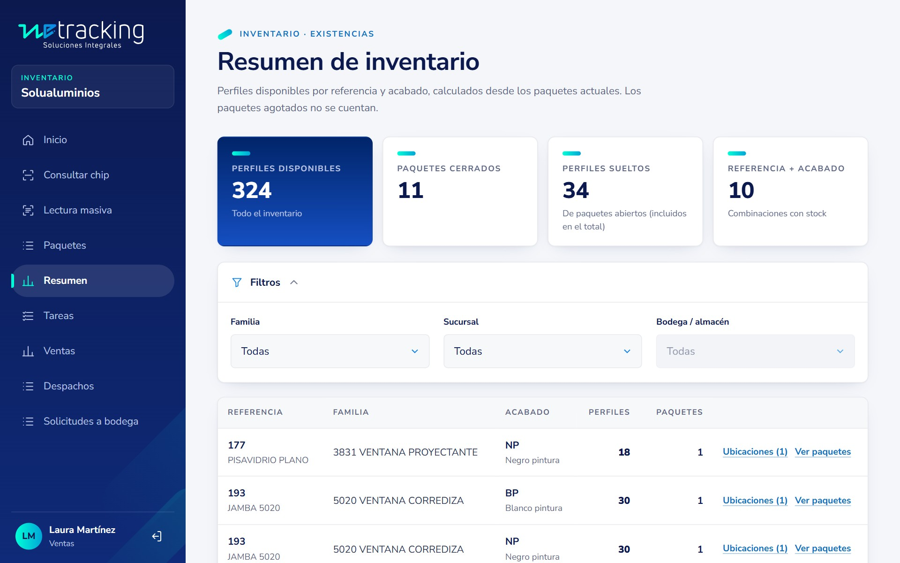
Resumen de inventario con sus totales.
Presiona Ubicaciones (2) para ver en qué bodega o almacén está cada cantidad, y Ver paquetes para ir a la lista de esos paquetes.
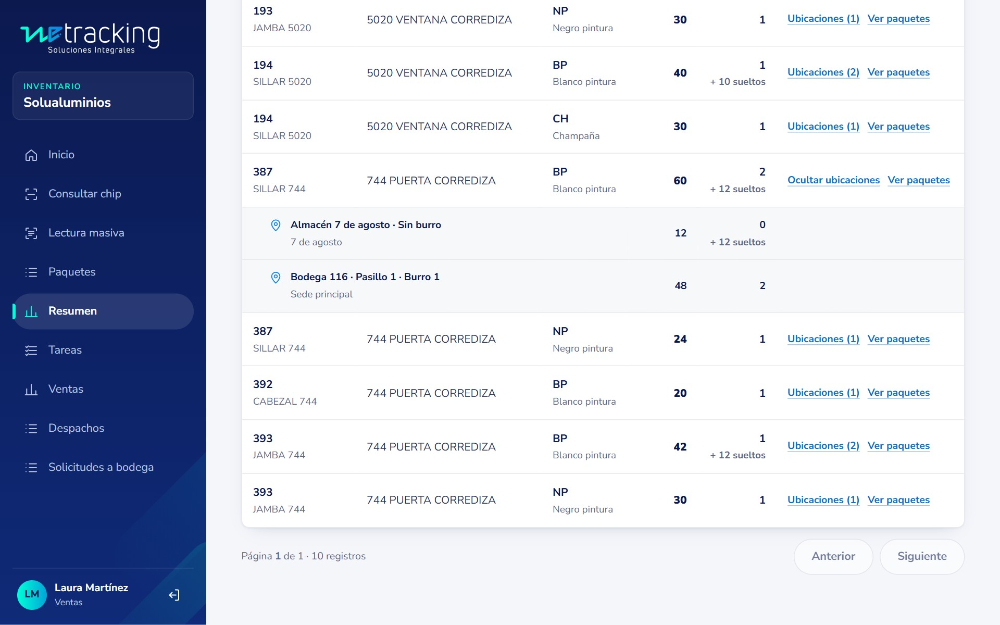
El sillar 744 blanco pintura: 12 sueltos en el Almacén 7 de agosto y 48 en la Bodega 116.
2.2 Paquetes
Paquetes lista todos los paquetes, del más reciente al más antiguo. Usa los filtros (familia, referencia, color, sucursal, bodega, pasillo, burro, estado, procedencia y proveedor) para encontrar lo que buscas.
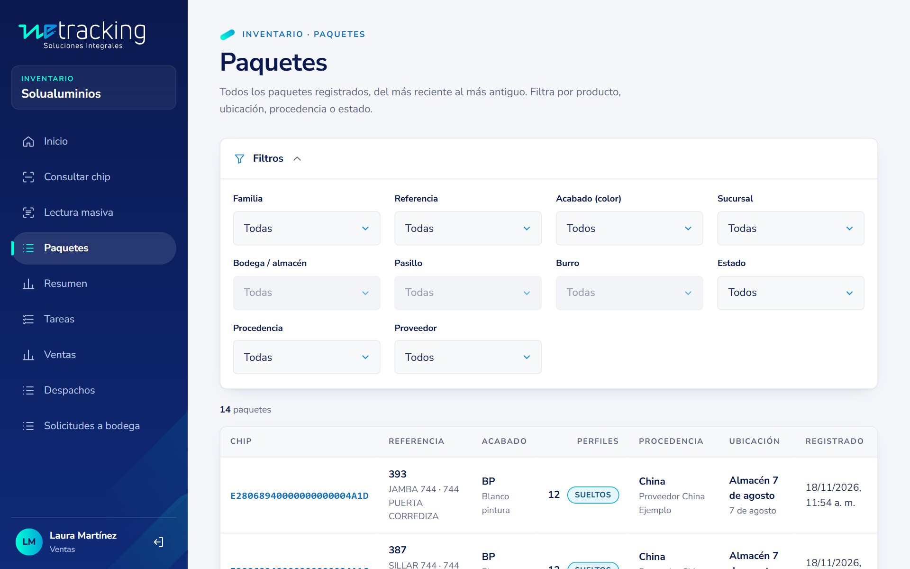
Filtros de la lista de paquetes.
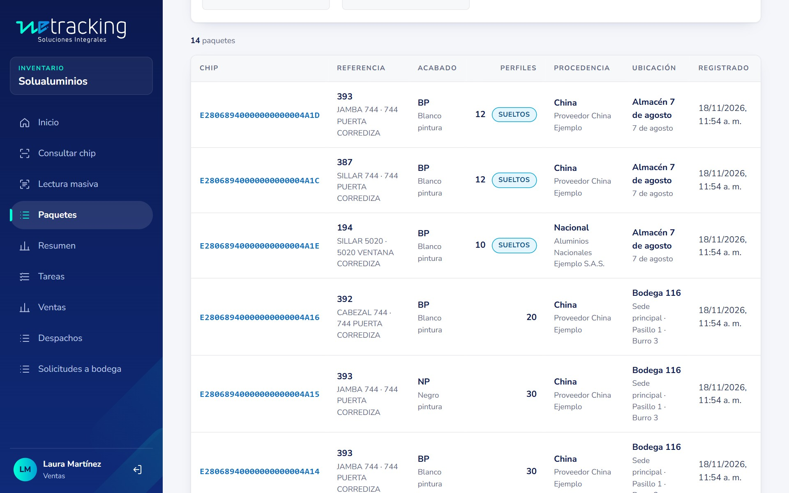
Resultado: chip, referencia, color, perfiles, procedencia (China o Nacional) y ubicación.
Sueltos
Un paquete suelto es uno que ya se abrió: sus perfiles se venden por unidad desde ese lugar.
2.3 Consultar un chip
Cada paquete tiene una etiqueta con un chip. En Consultar chip puedes leerlo con el lector Bluetooth (en modo teclado, con el campo activo) o escribir el código y presionar Buscar paquete.
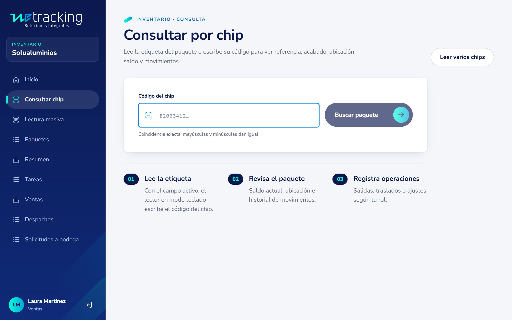
Consulta por chip.
Verás la referencia, el color, los perfiles disponibles, la ubicación exacta (bodega, pasillo y burro) y el historial de movimientos. Con tu rol solo consultas: las operaciones del paquete las hace bodega.
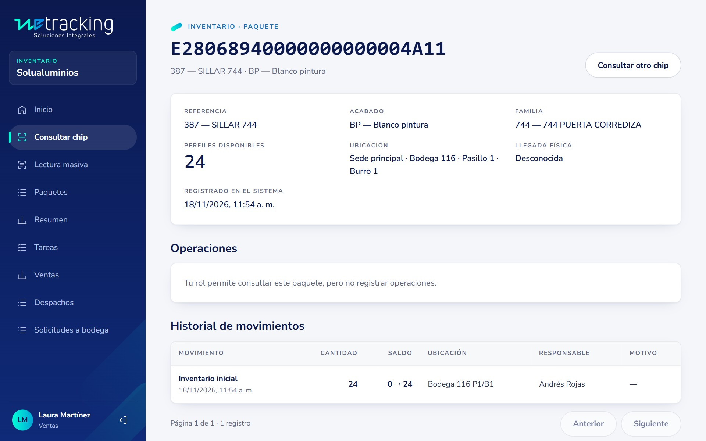
Detalle de un paquete.
Pantallazo pendiente (lector real)Lectura de un chip con el lector UHF Bluetooth emparejado al celular, y la pantalla «Lectura masiva» con varios chips leídos.
3Cotizaciones
3.1 Reglas que debes conocer
Una cotización no reserva ni descuenta inventario. El material se reserva cuando la orden de venta se confirma.
El precio lo habilita administración para cada referencia, color y origen. Si no hay precio, puedes pedir un precio manual, que debe autorizar un administrador.
China y Nacional son materiales distintos, aunque coincidan la referencia y el color: cada renglón dice qué origen exige.
La cantidad va en perfiles enteros, no en paquetes.
Descuentos: hasta 3 % por renglón y hasta 3 % de descuento global los aplicas tú. Un descuento global mayor necesita autorización de un administrador.
El IVA de venta viene en 19 % y puedes cambiarlo por renglón.
Los precios y totales los calcula el sistema y se conservan con las condiciones del día en que guardaste.
3.2 Crear una cotización
Entra a Ventas y presiona Nueva cotización.
Elige la modalidad: Detal (materiales y accesorios) o Ventanería (además, ensamble e instalación si se cobran; ver 3.10).
En Cliente, escribe parte del nombre o del NIT y elige uno de los resultados.
Opcional: Válida hasta, Notas, Forma de pago y Condiciones de pago. Si es solo una consulta, deja la forma de pago en «Por definir»: se pide al convertir en orden.
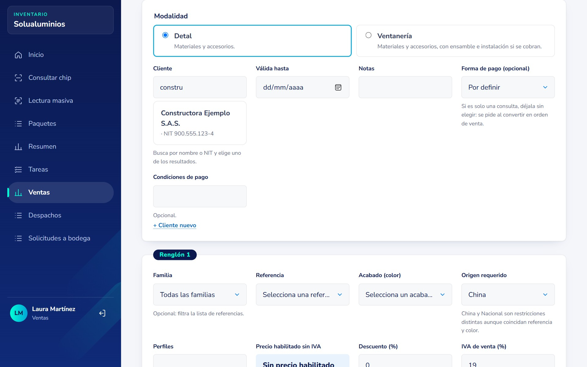
Modalidad y búsqueda del cliente: al escribir «constru» aparece Constructora Ejemplo S.A.S.
Si el cliente no existe, presiona + Cliente nuevo, escribe su nombre (y su NIT si lo tienes) y presiona Crear cliente.
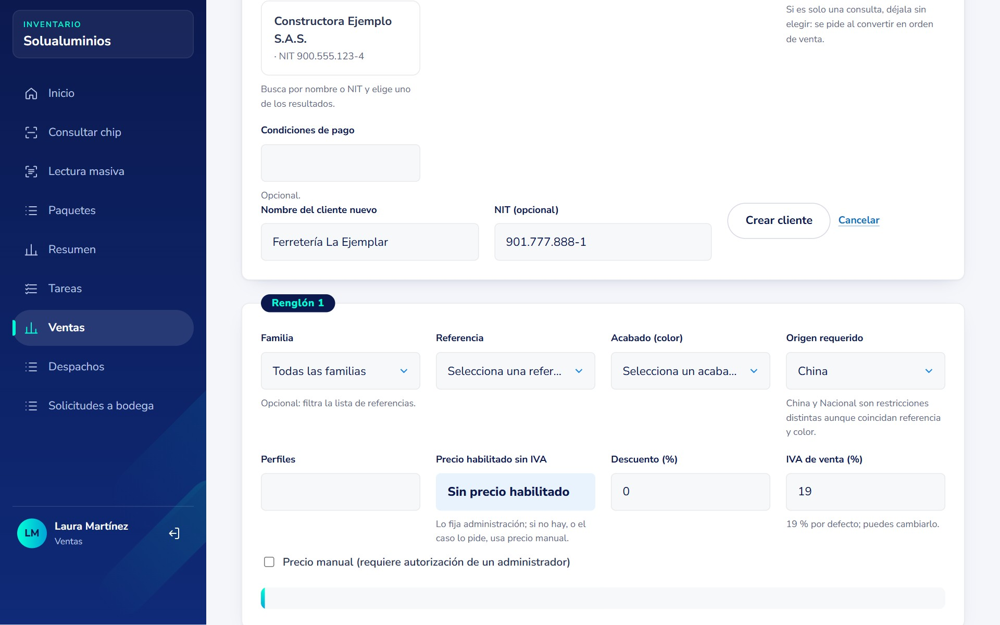
Crear un cliente desde la cotización.
3.3 Agregar renglones
Cada renglón es un material. Para llenarlo:
Familia (opcional): filtra la lista de referencias, por ejemplo «744 PUERTA CORREDIZA».
Referencia y Acabado (color).
Origen requerido: China o Nacional.
Perfiles: la cantidad.
Revisa el precio habilitado sin IVA; si quieres, pon un descuento (hasta 3 %) o cambia el IVA.
Para más materiales presiona + Agregar renglón; para quitar uno, Quitar renglón.
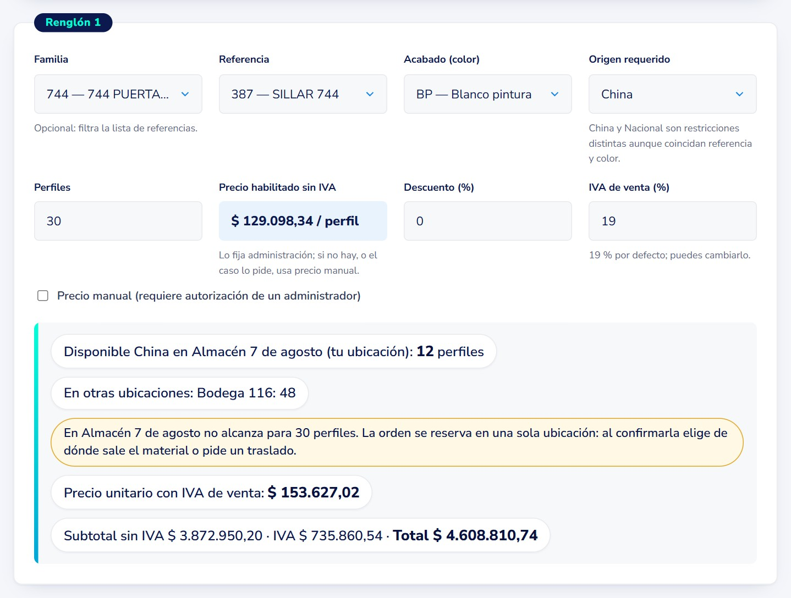
Renglón completo: precio, disponibilidad por ubicación, precio con IVA y total del renglón.
3.4 Disponibilidad por ubicación
Debajo de cada renglón ves cuántos perfiles hay disponibles de ese origen:
En tu ubicación (la que te asignó el administrador), primero.
En otras ubicaciones, aparte.
Un aviso amarillo si en tu ubicación no alcanza para la cantidad pedida.
La orden sale de una sola ubicación
Al confirmar la orden se reserva todo en una bodega o almacén. Si en tu ubicación no alcanza, al confirmar elige la ubicación que sí tiene el material, o pide un traslado (capítulo 6). Si no hay en ninguna, la orden queda pendiente de abastecimiento.
El material de origen desconocido (paquetes sin clasificar) se muestra aparte y no se usa hasta que administración lo clasifique.
3.5 Totales y descuento global
Al final ves el subtotal, los descuentos, el IVA y el total de la cotización. El descuento global se aplica sobre toda la cotización, antes del IVA.
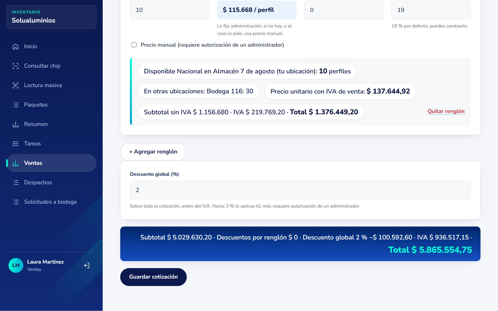
Dos renglones con 2 % de descuento global.
3.6 Guardar, revisar y descargar el PDF
Presiona Guardar cotización. Si falta algo, el botón dice qué (por ejemplo «Para guardar: Elige el cliente.»).
La cotización recibe un número (COT-…) y queda en estado Borrador.
Presiona Descargar PDF para enviársela al cliente.
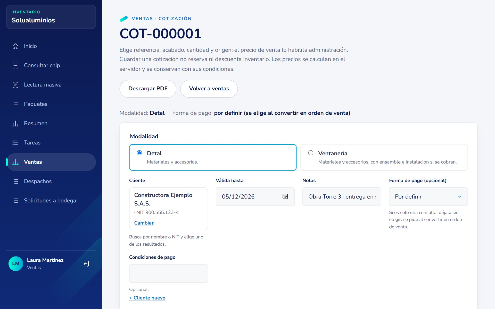
Cotización guardada con su número y el botón Descargar PDF.
Abajo, Condiciones guardadas muestra cada renglón con su precio, descuento, IVA y total, tal como quedaron. Desde ahí puedes Guardar cambios, Convertir en orden de venta o Cancelar cotización.
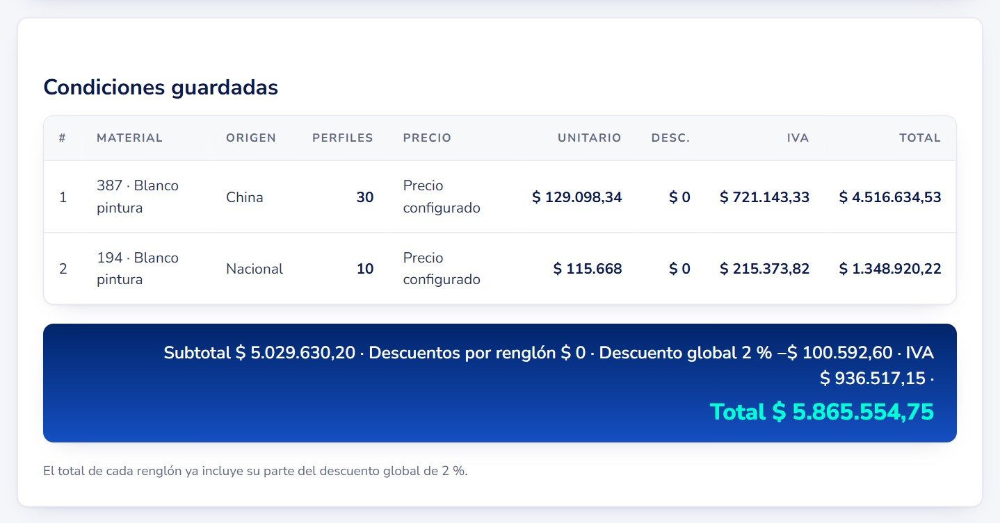
Condiciones guardadas de la cotización.
Editar
Mientras esté en Borrador puedes cambiar renglones, cliente y condiciones; presiona Guardar cambios. Una vez convertida en orden ya no se edita.
3.7 Precio manual
Si un material no tiene precio habilitado («Sin precio habilitado»), o el caso lo pide (un precio acordado con el cliente), usa precio manual:
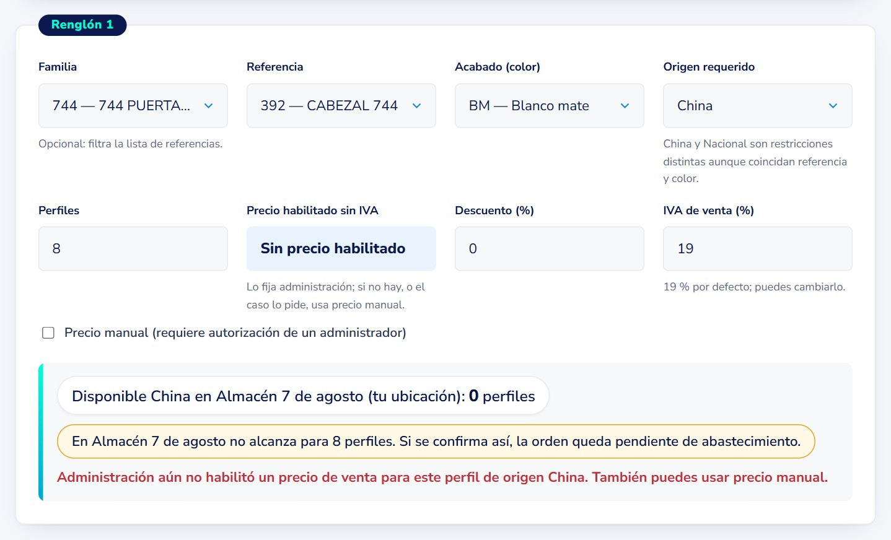
Blanco mate sin precio habilitado para origen China.
Marca Precio manual (requiere autorización de un administrador).
Escribe el precio manual sin IVA por perfil.
Opcional: el costo de compra estimado por perfil; el sistema calcula el margen estimado para el administrador.
Explica por qué el precio es manual (obligatorio).
Elige el administrador que autoriza y guarda con Guardar y solicitar autorización.
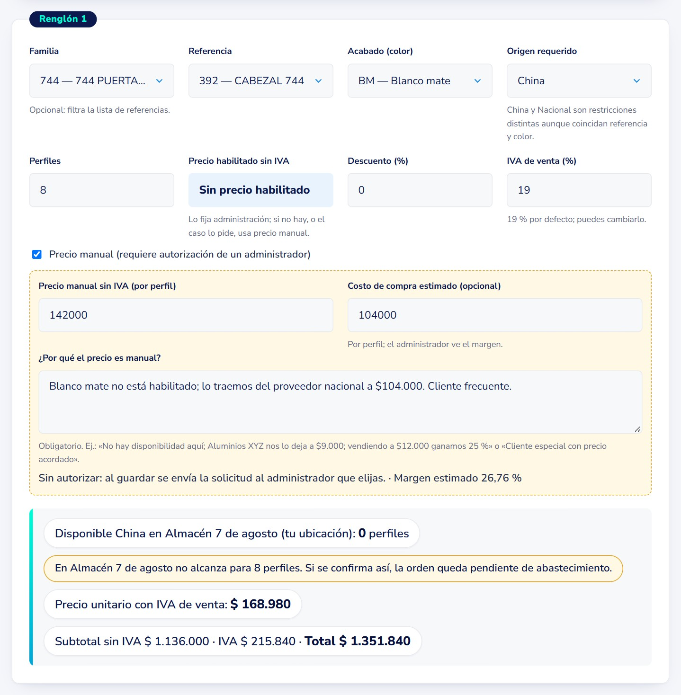
Precio manual con costo estimado y justificación.
Mientras no lo autoricen
La cotización no se convierte en orden ni se descarga en PDF. Si cambias un precio manual o envías otra solicitud, la anterior se cancela.
3.8 Descuento global mayor al 3 %
Si escribes un descuento global mayor al 3 %, aparecen el motivo (opcional) y el administrador que autoriza. La cotización se guarda con 0 % y la solicitud le llega al administrador como tarea; si la aprueba, el descuento se aplica solo.
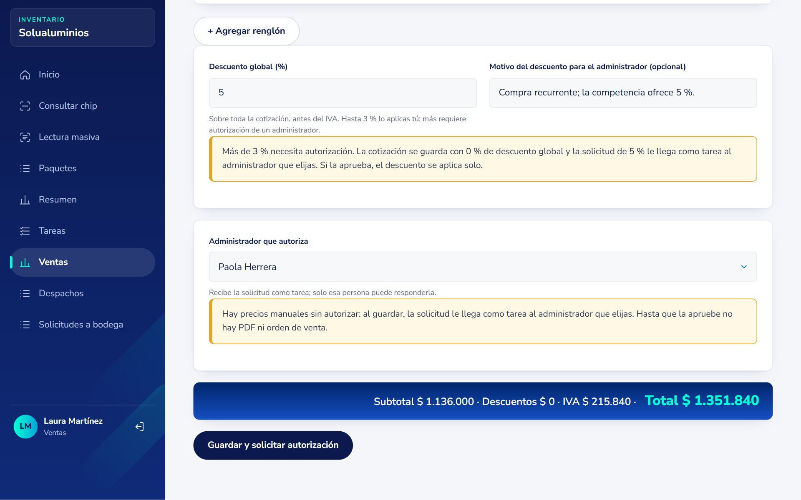
Solicitud de 5 % de descuento global a un administrador.
Mientras tanto, la cotización muestra las solicitudes pendientes de autorización, con lo que pasaría si se aprueban. Puedes Cancelar solicitud si ya no la necesitas.
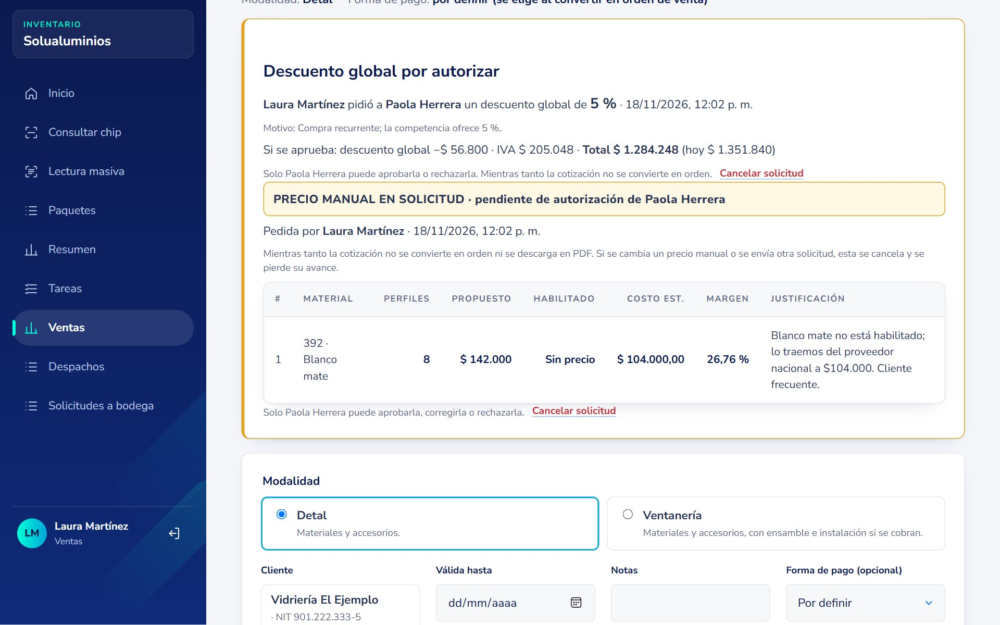
Descuento global y precio manual pendientes de autorización.
3.9 Respuestas del administrador
Cuando el administrador aprueba o rechaza, te llega una notificación y en Ventas aparece «Tienes N respuestas nuevas a tus solicitudes», con un botón Ver cotización. Un descuento aprobado ya queda aplicado; un precio manual puede haber sido corregido por el administrador, así que revísalo.
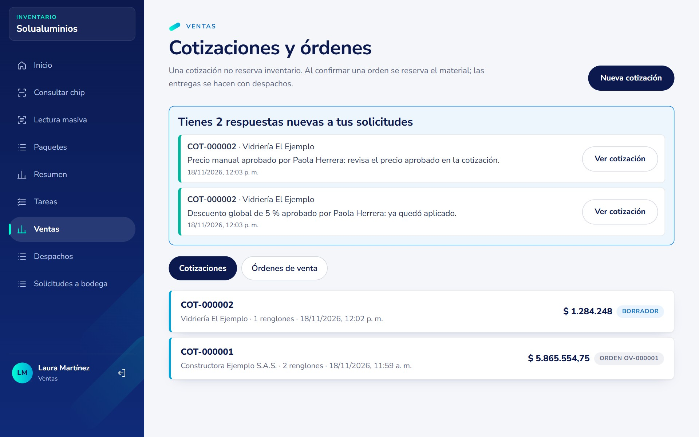
Respuestas nuevas: precio manual y descuento global aprobados.
3.10 Ventanería: ensamble e instalación
Con la modalidad Ventanería aparece el recuadro Mano de obra (Ventanería). Escribe el valor total de cada servicio que se cobre, sin IVA y sin descuentos; deja vacío el que no se cobre:
Ensamble: armar la ventana en el taller.
Instalación: instalar la ventana en la obra.
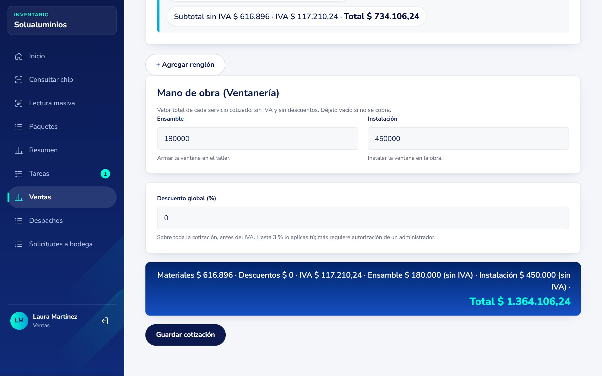
Cotización de Ventanería con ensamble e instalación.
En la lista de Ventas, estas cotizaciones llevan la marca Ventanería · con mano de obra.
4Órdenes de venta
4.1 Convertir una cotización en orden
Abre la cotización y presiona Convertir en orden de venta.
Elige la forma de pago (obligatoria): contado en efectivo, contado por transferencia, abono o cartera (crédito).
Opcional: las condiciones de pago, por ejemplo «50 % de anticipo y saldo contra entrega».
Si el cliente necesita factura electrónica, marca Requiere facturación (ver 4.5).
Presiona Convertir en orden de venta.
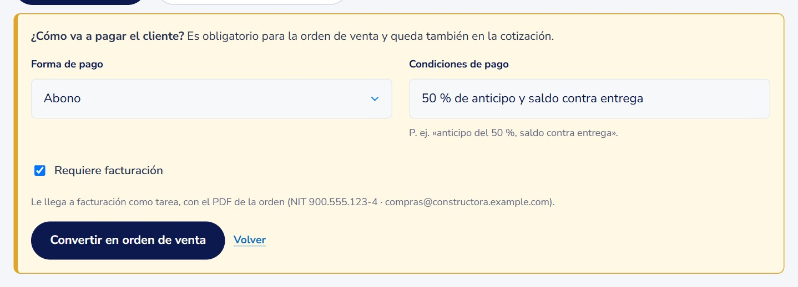
Forma de pago, condiciones y «Requiere facturación».
Para facturar, el cliente necesita NIT o cédula y correo. Si le faltan, la ventana los pide y quedan guardados en el cliente:
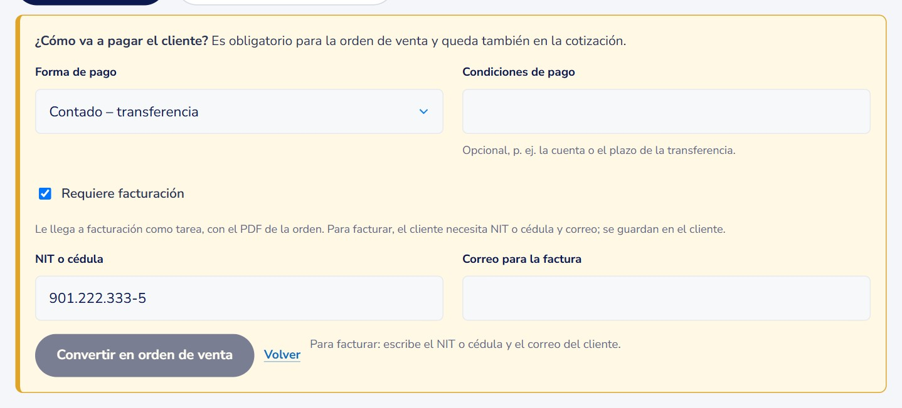
Cliente sin correo: se pide al marcar «Requiere facturación».
La orden recibe un número (OV-…) y queda Por confirmar.
Orden de venta recién creada.
4.2 Estados de la orden
Estado
Qué significa
Por confirmar
La orden existe, pero todavía no tiene material reservado.
Pendiente de abastecimiento
Se intentó confirmar y faltó material: no se reservó nada.
Reservada
Todo el material está reservado en una ubicación; ya puedes pedir despachos.
Entregada
Se entregó todo lo pedido.
Cancelada
Se canceló; sus reservas se liberaron.
4.3 Confirmar y reservar
Confirmar reserva la cantidad completa de cada renglón en la ubicación elegida, o nada.
En Confirmar y reservar, elige la sucursal y la bodega o almacén de donde saldrá el material.
Presiona Confirmar orden.
Si falta material en esa ubicación, verás qué renglón falta y cuánto, y la orden queda pendiente de abastecimiento. Puedes volver a confirmar desde otra ubicación o cuando llegue el material.
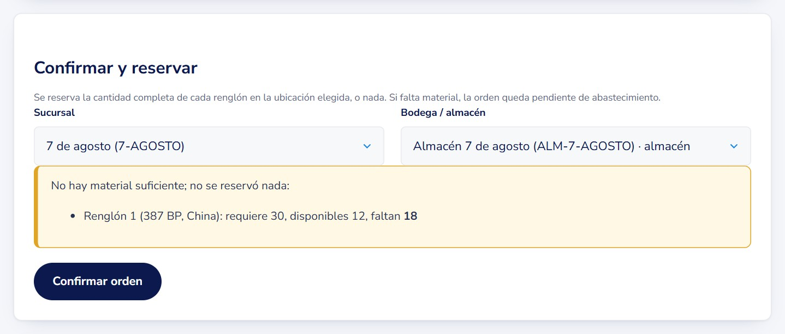
En el Almacén 7 de agosto solo hay 12 de los 30 perfiles: no se reservó nada.Confirmada desde la Bodega 116: la orden queda «Reservada · sale de Bodega 116».
Entrega parcial
Si el cliente necesita llevarse una parte antes de que esté todo, usa Autorizar entrega parcial: se reserva solo lo que autorices y el resto de la orden queda pendiente.
4.4 Estado de pago
En órdenes de abono o cartera, el encabezado muestra Pago pendiente. Cuando el cliente pague, presiona Marcar como pagada. El cambio se puede deshacer y queda registrado con tu nombre.
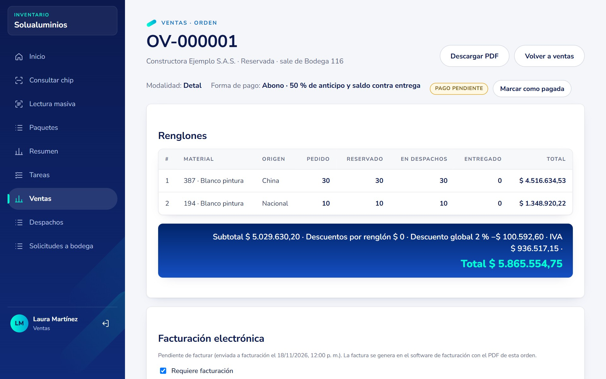
Encabezado de la orden: forma de pago, condiciones y estado de pago.
4.5 Facturación electrónica
Si marcaste Requiere facturación, la orden le llega como tarea a la persona de Facturación, que descarga el PDF, hace la factura en el software de facturación y registra su número.
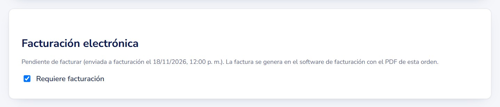
Recuadro de facturación electrónica en la orden.
Mientras no esté facturada, puedes marcar o desmarcar Requiere facturación desde la orden.
Cuando la facturan, te llega un aviso y la orden muestra Factura FE-….
Si se cancela una orden ya facturada, Facturación recibe una tarea para anular la factura.
4.6 Cancelar una orden
Presiona Cancelar orden…, escribe el motivo y confirma. Se liberan las reservas y los despachos abiertos; las salidas ya confirmadas se conservan.
5Despachos
Un despacho autoriza a bodega a entregar el material reservado de una orden. Se crea una tarea para el responsable de bodega, que lee los paquetes y confirma la salida.
5.1 Crear un despacho
En una orden Reservada, presiona Crear despacho.
Revisa las cantidades de cada renglón.
Elige el responsable de bodega (solo aparecen los usuarios de bodega de la ubicación de salida).
Pon la fecha límite y la hora (hora de Colombia).
Presiona Crear despacho y tarea.
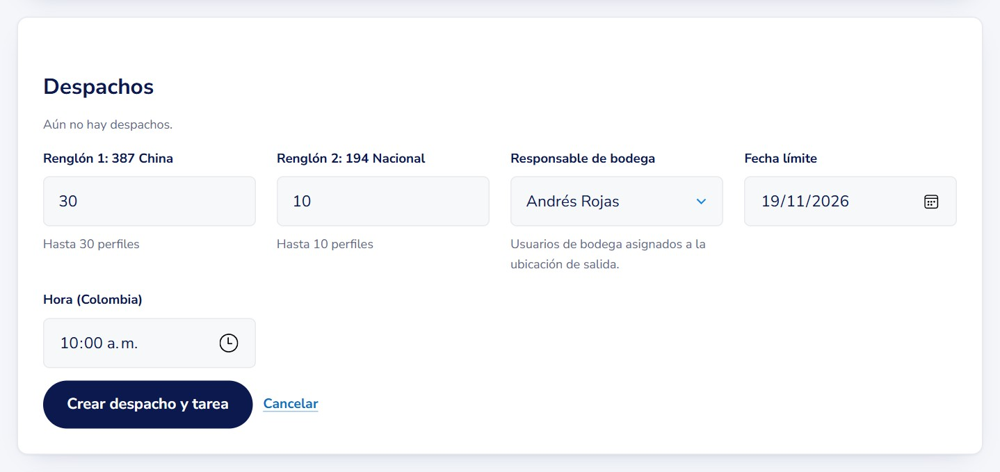
Formulario del despacho.
5.2 Seguir un despacho
El despacho recibe un número (DES-…) y muestra lo autorizado, lo preparado, lo entregado y las incidencias, con los paquetes sugeridos y su pasillo y burro.
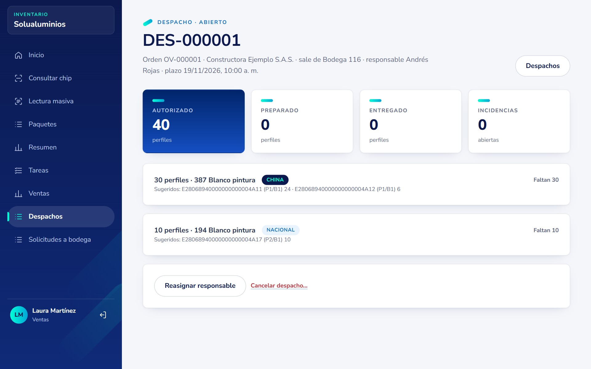
Despacho abierto con los paquetes sugeridos.
En Despachos ves todos los tuyos por estado: Abiertos, Confirmados (salida confirmada) y Cancelados. Desde el despacho también puedes Reasignar responsable o Cancelar despacho….
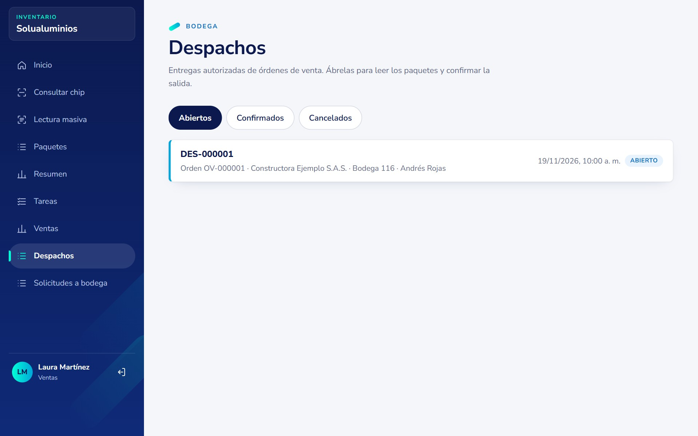
Lista de despachos.
6Solicitudes a bodega
Sirven para pedir perfiles a una bodega para un almacén, por ejemplo de la Bodega 116 al Almacén 7 de agosto. No necesitas leer chips: bodega prepara paquetes completos, confirma la salida y el almacén marca el pedido como recibido.
Importante
Enviar una solicitud no mueve ni reserva inventario. El material cambia de ubicación cuando bodega confirma la salida y el almacén lo recibe.
6.1 Crear una solicitud
Entra a Solicitudes a bodega y presiona Nueva solicitud.
Elige la bodega que abastece y el almacén destino.
El bodeguero que prepara se asigna por turno; cámbialo solo si no está disponible.
Pon la fecha límite, la hora y, si quieres, una nota.
En cada renglón: referencia, color, origen y perfiles (no paquetes). Verás cuánto hay disponible en esa bodega.
Presiona Enviar a bodega.
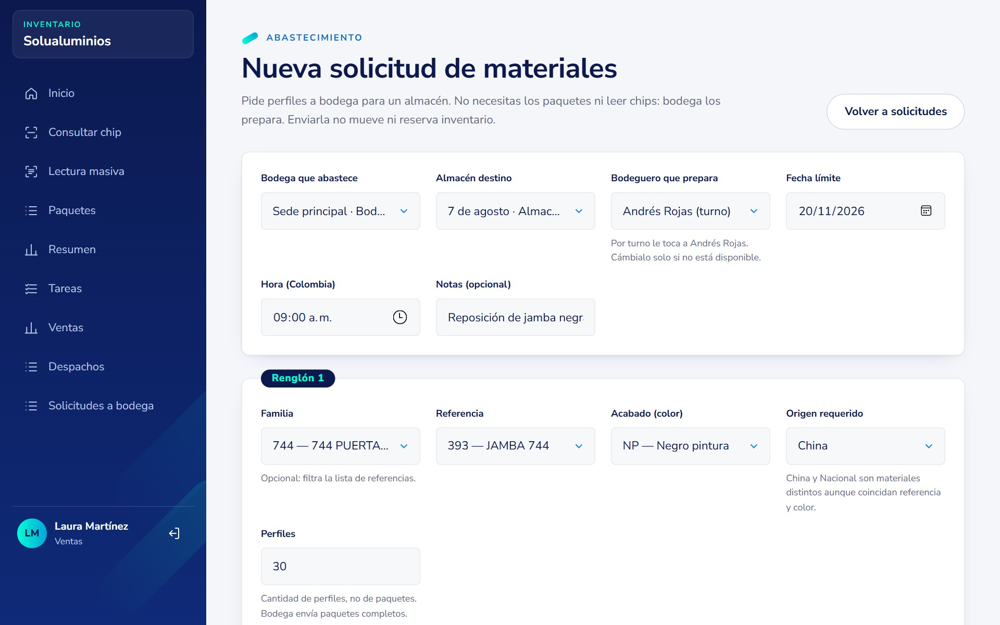
Nueva solicitud de materiales.
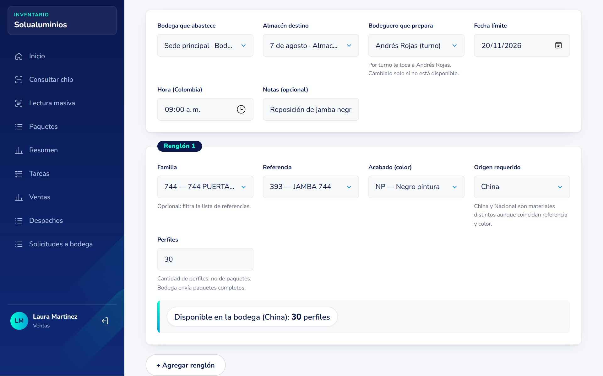
Renglón de la solicitud con lo disponible en la bodega.
6.2 Seguimiento
La solicitud recibe un número (SM-…). En su detalle ves lo solicitado, preparado, despachado y pendiente. Como bodega envía paquetes completos, lo preparado puede superar lo solicitado.
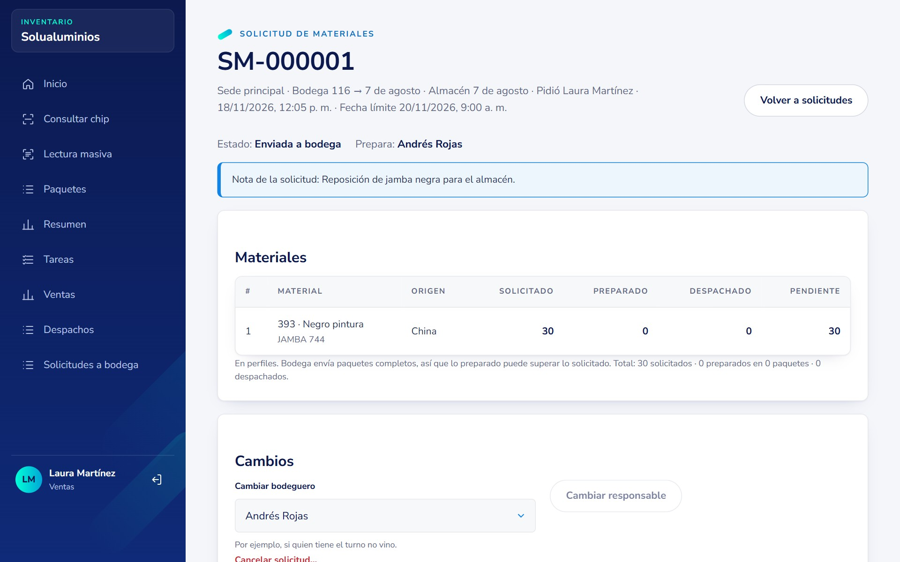
Solicitud enviada a bodega.
La lista se organiza en Por preparar, En camino, Recibidas y Canceladas. Desde el detalle puedes Cambiar responsable o Cancelar solicitud….
7Tareas
En Tareas ves las tareas que te asignaron y puedes programar las tuyas, por ejemplo una llamada a un cliente.
En Nueva tarea, escribe el título y, si quieres, un detalle.
Elige el día y la hora en que vence (hora de Bogotá).
Presiona Crear tarea. Cuando la hagas, presiona Marcar completada.
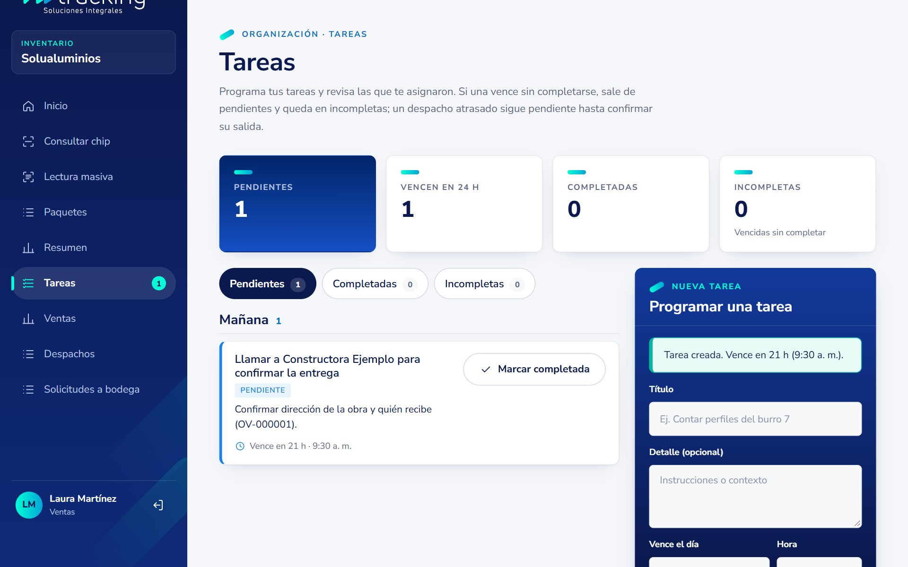
Tareas pendientes y formulario para programar una.
Si una tarea vence sin completarse, pasa a Incompletas. Arriba ves cuántas tienes pendientes y cuántas vencen en las próximas 24 horas.
8La lista de Ventas
Ventas tiene dos pestañas: Cotizaciones y Órdenes de venta. Cada fila muestra el número, el cliente, la fecha, el total y unas marcas de estado. Presiona una fila para abrirla.
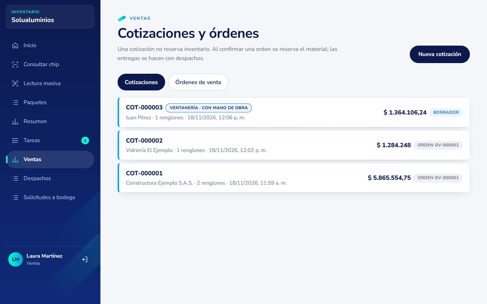
Cotizaciones: borrador, de Ventanería y convertidas en orden.
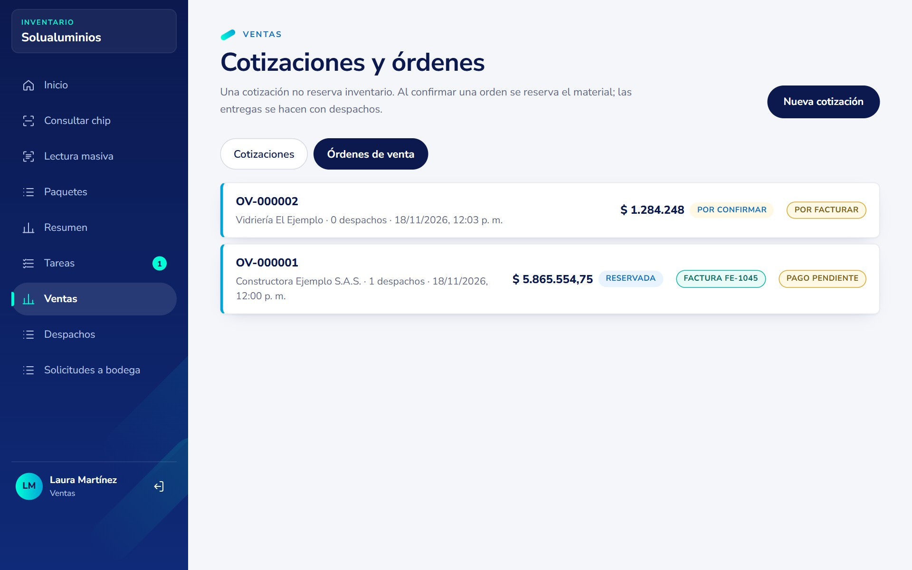
Órdenes: estado, facturación y pago.
Marca
Significado
Borrador
Cotización guardada que aún puedes editar.
Orden OV-…
La cotización ya se convirtió en esa orden.
Ventanería · con mano de obra
Cotización con ensamble o instalación.
Por facturar
Requiere factura y todavía no la registran.
Factura FE-…
Ya se facturó con ese número.
Pago pendiente
Orden de abono o cartera que el cliente aún no ha pagado.
9Preguntas frecuentes
La cotización dice que hay perfiles, pero al confirmar la orden faltan.
La orden se reserva en una sola ubicación. Revisa en el renglón cuánto hay en tu ubicación y cuánto en otras, y confirma desde la ubicación que tiene el material, o pide un traslado.
Aparece «Sin precio habilitado».
Administración no ha fijado precio para esa referencia, color y origen. Pídelo a administración o usa precio manual (3.7).
No me deja convertir la cotización en orden.
Revisa si hay una solicitud de precio manual o de descuento pendiente de autorización, y que hayas elegido la forma de pago. Si marcaste «Requiere facturación», el cliente necesita NIT o cédula y correo.
No me deja guardar.
El botón dice lo que falta, por ejemplo «Para guardar: Elige el cliente.». En el cliente hay que elegir uno de los resultados; escribir el nombre no basta.
Quiero dar más del 3 % de descuento.
Como descuento global, pide la autorización a un administrador (3.8). Por renglón, el máximo es 3 %; para más, usa precio manual.
Recargué la página y me pidió ingresar otra vez.
Es normal: por seguridad, la sesión se cierra al recargar o cerrar la página.
No me llegan notificaciones.
Actívalas en Inicio → Este dispositivo en cada celular que uses, y revisa que el navegador tenga permiso para notificar.
Me equivoqué en una orden ya confirmada.
Cancélala con su motivo (4.6) y crea una nueva cotización. Si ya estaba facturada, Facturación recibirá la tarea de anular la factura.